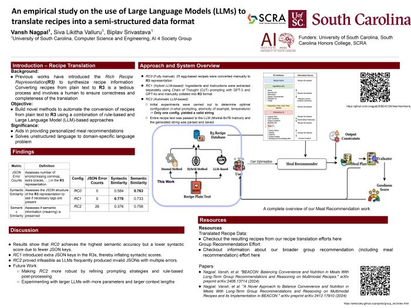

Exercise Recommendation
Key Idea
We consider the problem of long-term healthy and happy living assisted by technology. Specifically, we explore how to use Explainable AI and Ubiquitous Computing for better,
personalized health with Yoga learning, practice, performance and environment monitoring, and group recommendation, for long-term exercise adherence.
Quick Start
-
Our Surya Namaskar (SN) explorer tool, SN-YE, pronounced "sun-yee", is intended for a beginner to tell about SN, variants,
breathing, utterances/ mantras, etc. powered by an SN ontology (SN-YO). Please try SN-YE and provide feedback on the form.
[SN-YE Tool]
[SN-YO Ontology]
[Survey Form]
-
Return to the broader
Trustworthy Group Recommendation
page for team formation and fairness-focused group recommendation work.
Modeling for SN
Key Contacts:
Mansi Dodiya,
Bharath C Muppasani,
Hari P Gupta,
Biplav Srivastava
BEACON System - Now Available!
We have developed BEACON (Balancing Convenience and Nutrition), a
personalized meal planning system that helps people make optimized meal choices over time periods.
The system incorporates food restrictions, chronic health conditions, regional cuisine preferences,
and balances short- and long-term constraints to promote individual health and happiness.
[Live Demo]
[Paper]
[GitHub]
Personal health can benefit significantly from meals planned over extended periods, whether for a
single day, a three-day travel period, or an entire week. Our research addresses this through
BEACON, a data-driven meal recommender system designed to help both
healthy individuals and people with health conditions (such as diabetes) make optimized meal choices.
The system leverages several innovative components:
-
Variable Meal Configurations: Users can customize meal structures (breakfast, lunch, dinner)
with different components (main course, side dishes, beverages, desserts)
-
Flexible Time Horizons: Recommendations span from single days up to multi-day periods,
enabling better long-term planning
-
Rich Recipe Representation (R3): Recipes are converted from text to a structured, multimodal
format that captures both content and preparation processes
-
Advanced Recommendation Algorithms: Using contextual bandits and reinforcement learning, the
system learns user preferences and provides highly personalized recommendations
-
Comprehensive Goodness Metrics: Evaluations consider duplicate avoidance, meal coverage, and
alignment with user dietary constraints
-
Fairness Evaluation: Ensures recommendations are unbiased and not stereotyped toward any
group of food items or user demographics
The system has been deployed and tested with real users, demonstrating significant improvements over
baseline methods in balancing convenience with nutritional needs. BEACON represents a novel approach
to meal recommendation that moves beyond simple food suggestions to comprehensive meal planning with
health optimization.
Representative Publications
-
[2025] A Novel Approach to Balance Convenience and Nutrition in Meals With Long-Term Group
Recommendations and Reasoning on Multimodal Recipes and its Implementation in BEACON
Presented at WAIN workshop at IEEE ICDM 2025
[Paper]
[Demo]
[GitHub]
-
 [2025] An empirical study on the use of Large Language Models (LLMs) to translate recipes into a
semi-structured data format
Conference Poster at the National Big Data and Health Science Conference
[Poster]
-
[2024] A Novel Approach to Balance Convenience and Nutrition in Meals With Long-Term Group
Recommendations and Reasoning on Multimodal Recipes and its Implementation in BEACON
Presented at National Big Data and Health Science Conference 2025
as
A Digital Twin for Increasing Adherence to Dietary Guidelines with Personalized, AI-Driven, Long
Duration Meal Recommendations.
[Paper]
[BibTex]
-
[2024] BEACON: Balancing Convenience and Nutrition in Meals With Long-Term Group Recommendations and
Reasoning on Multimodal Recipes
Arxiv Preprint
[Paper]
[BibTex]
|